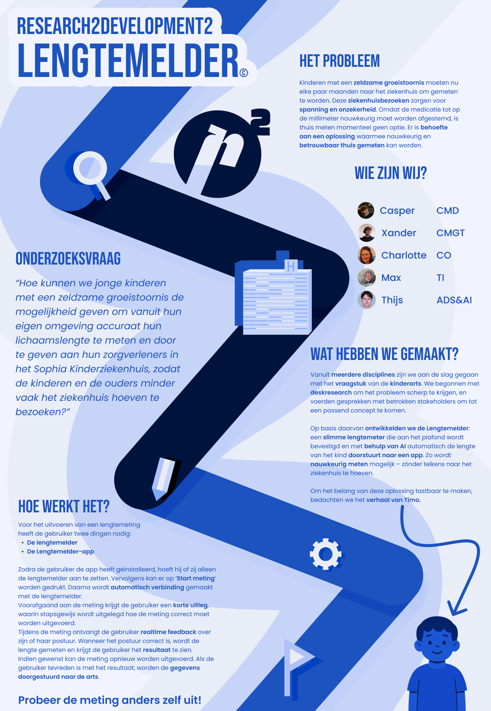
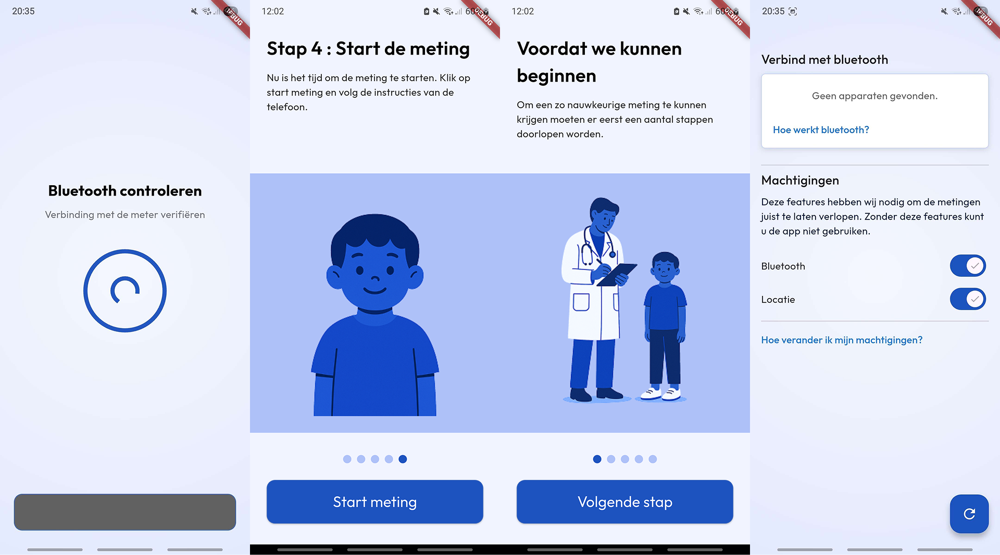
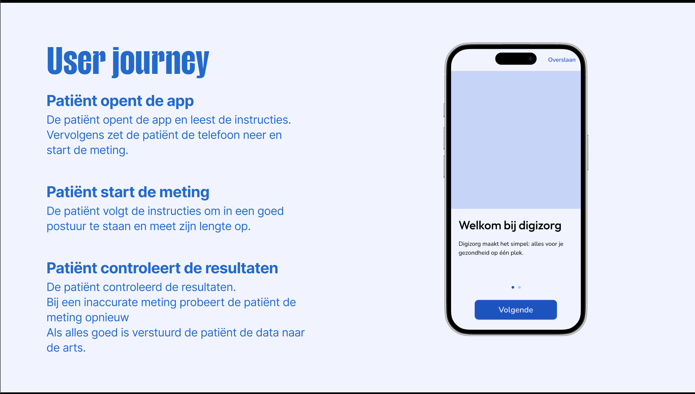
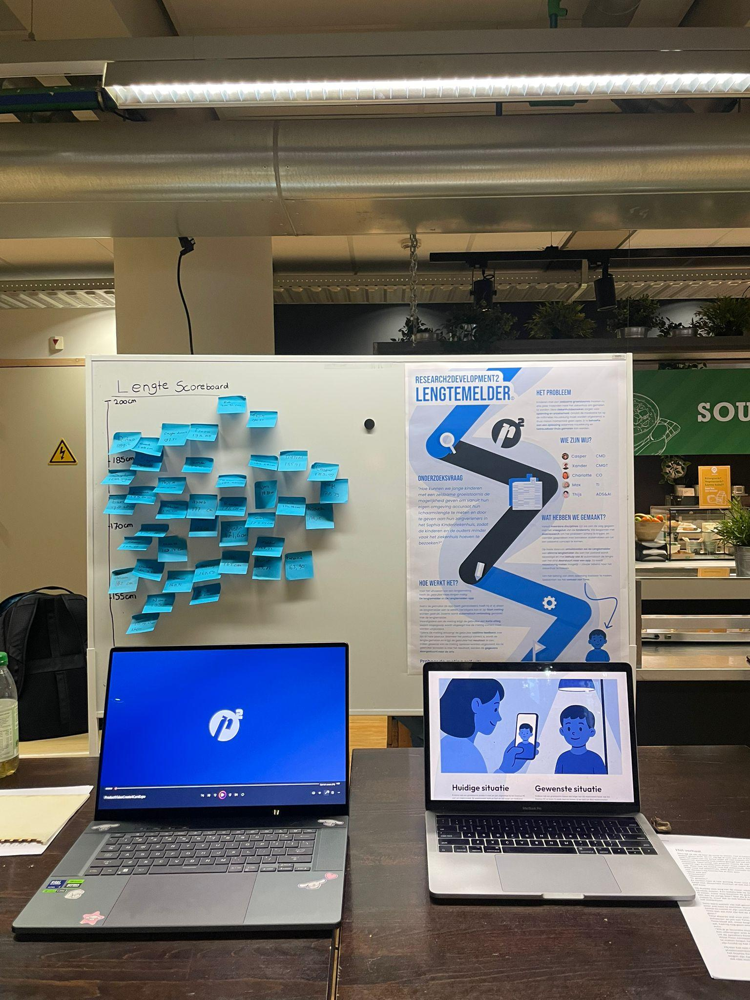

Introductie
Kinderen met groeistoornissen moeten vier keer per jaar hun lengte opmeten in het Erasmus MC. Het doel van deze sessies is om de hoeveelheid medicatie te controleren voor de actuele lengte van de patiënt. Deze meetsessies kosten het ziekenhuis veel geld en tijd, wat heel veel tijd kost voor zowel de patiënt, ouders en dokters. Het EMC is het enige ziekenhuis in de regio dat gespecialiseerd is in dit specifieke gebied met speciale gecertificeerde dokter. Hierdoor moeten patiënten soms lange afstanden afleggen voor die controles. Het doel is om een deel van deze controles thuis uit te kunnen voeren, hiermee wordt de druk op het ziekenhuis verminderd en kan de patiënt evt. de controle digitaal uitvoeren.
Dit is een poster die we in teamverband hebben gemaakt meer informatie geeft over het probleem
Opdrachtgever en Team
Schrijf hier over de opdracht. Het vraagstuk van C4C en het interdisciplinaire team en de samenwerking daarmee
In de laatste helft van mijn 3e schooljaar heb ik besloten mijzelf aan te melden voor het interdisciplinaire project. Hierin konden wij een vraagstuk van onze opdracht gever aan gaan met een team dat bestaat uit meerdere studenten van verschillende opleidingen binnen de hogeschool.
Onze opdrachtgever voor het semester was Create4Care,
Create4Care had een probleem waar ons team mee aan de slag konden dit probleem heb ik samen met mijn team vertaald naar een onderzoeksvraag: "Hoe kunnen we jonge kinderen met een zeldzame groeistoornis de mogelijkheid geven om vanuit hun eigen omgeving accuraat hun lichaamslengte te meten en door te geven aan hun zorgverleners in het Sophia Kinderziekenhuis,
zodat de kinderen en de ouders minder vaak het ziekenhuis hoeven te bezoeken?"
Tijdens het semester konden wij één dag in de week werken in het Erasmus MC en konden we spreken met de stakeholders.
Tijdens het semester werkten we met een interdisciplinair team, dit betekent dat je in een groepje komt met leerlingen van verschillende opleidingen. Ons team bestond uit 5 man. Xander (CMGT), Thijs (ADS&AI), Casper (CMD), Charlotte (CO), Max (TI)
Juist omdat wij van verschillende opleidingen kwamen konden wij veel dingen van elkaar leren en elkaars methodes uitoefenen en in de praktijk gebruiken. Door dit brede team had iedereen een eigen expertise en kwam er al snel een professioneel resultaat tevoorschijn.
Uitvoering
De bedoeling was om een extentie voor de bestaande app 'Digizorg' te ontwikkelen. Deze app is gemaakt met flutter. Om consistent qua thema en het makkelijk te maken voor de developers heb ik daarom ook gekozen om mijn app te ontwikkelen met flutter. Flutter was voor mij compleet nieuw in het opzichte van mobile app design en daarvoor moest ik veel onderzoek doen om het te ontwikkelen. Ik heb een design gekregen van Casper en heb deze zo goed mogelijk nagebouwd in de app met flutter. Dit was voor mij fijn om te doen omdat ik meteen het gevoel kreeg dat ik een professionele app aan het ontwikkelen was. Deze app heeft settings, een van de core values was transparantie. Hierdoor is ervoor gekozen precies te laten zien waar de app toegang voor heeft en te vertellen wat er met al die data gebeurd wordt. Vervolgens moest de app kunnen koppelen met de fysieke lengtemeter gemaakt door Max. Hiervoor heb ik een custom bluetooth menu geschreven dat alle bluetooth resultaten filtert en alleen de "lengtemeters" laat zien. Vervolgens kan de meting gestart worden. De bluetooth koppeling wordt opgeslagen op de telefoon dus mocht de gebruiken eerder een meting hebben gedaan kan diegene op start drukken en dan zorgt de app ervoor dat hij automatisch met de juiste bluetooth apparaat verbind.
 Ook is er een user journey gemaakt die de beleving en werking van de app beschrijft.
Eindmarkt
Tijdens de eindmarkt zijn alle betrokken personen uitgenodigd om de uiteindelijke resultaten te bekijken. Zowel de dokters als de ontwikkelaars van de digizorg app en Mensen van Create4Care kwamen langs om te kijken. Iedereen was heel positief verrast en er werden opmerkingen gemaakt over dat ze dit graag in de praktijk wilden zien. Wij boden de bezoekers aan zelf de meting uit te proberen. In het wij gaven de bezoekers de telefoon met de app, gaven een korte uitleg en vervolgens konden ze hun eigen lengte meten. De resultaten van de metingen hebben wij op een lengte scoreboord geplakt. En hierdoor kon je uiteindelijk ook de gemiddelde lengte van iedere bezoekers zien. Dit was heel leuk om te doen en gaf een leuk resultaat.
